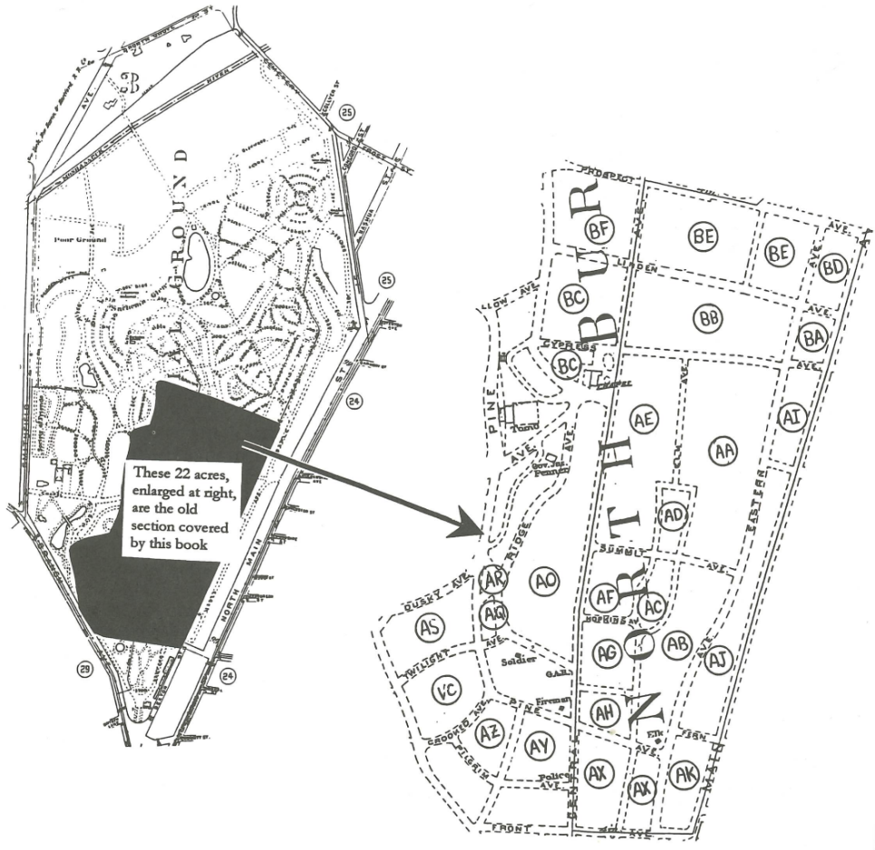
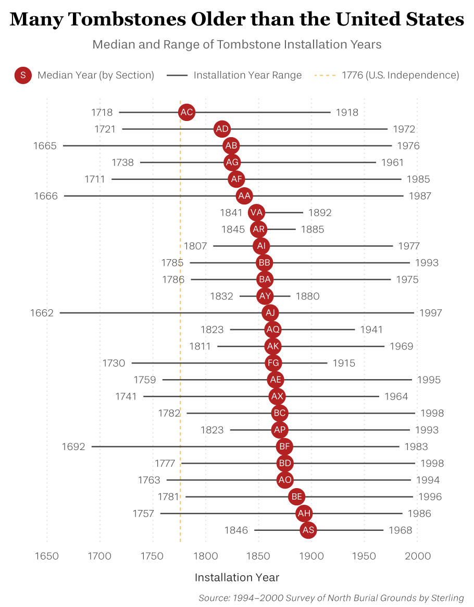
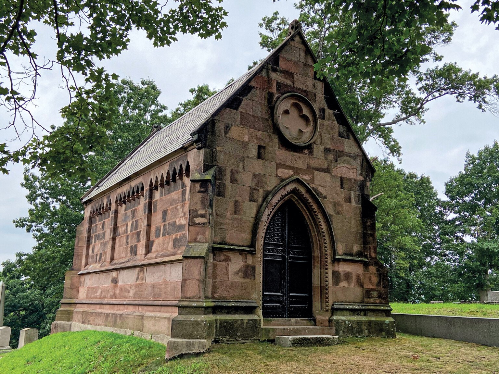
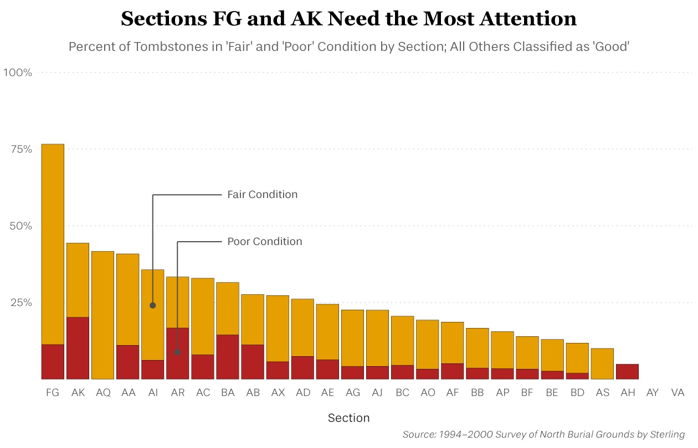
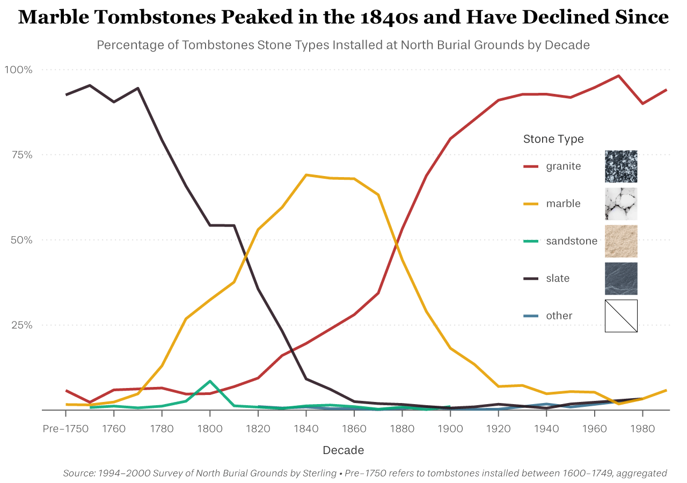

North Burial Ground • Image credit: Kenneth C. Zirkel
Apr 30, 2025
It's June 1700, long before the American Revolution. We're in Providence, Rhode Island. A busy town hall. "Whereas it hath this day been proposed that some Convenient percell of land may be stated to lie in the Comon Continually... to be for the use of Buireing of the dead," proclaimed the resolution [1]. This resolution marked the beginning of one of America's oldest cemeteries.
Welcome to the North Burial Ground—just a 7 minute drive from Brown University's campus, and an important historic site hiding in plain sight.
To mark its 300th anniversary, historian John E. Sterling and a team of volunteers surveyed the cemetery from 1994 to 2000, assigning each tombstone a unique ID and documenting its story. Since official records only began in 1848—despite the cemetery’s much earlier founding, Sterling and his team had to fill in the gaps. His work is compiled in a book [1], and it comprises the primary dataset for this project. He specifically analyzed the Old Section, a 22 acre section of the cemetery containing its oldest stones.
Map of North Burial Ground and sections • Image credit: John Sterling [1]
Despite not officially being designated a cemetery until 1700, some burials date back as far as the mid–1600s. The oldest section, AC, has a median installation year of 1782 which was still during the American Revolution.
The cemetery is also home to many notable individuals, including some key figures in the history of Rhode Island. Several members of the Brown family, including Chad, Moses, and John Carter, are buried here. Yes—those Browns, of Brown University. Stephen Hopkins, a signer of the Declaration of Independence, is also buried here, along with Edgar Allan Poe's former fiancee Sarah Whitman [2].
Brown family mausoleum • Image credit: Dana Laverty [2]
Throughout its history, the cemetery had to fight constantly against outside forces, such as railroad construction and even medical students. Medical students in the 1800s would commit grave robbery to study anatomy. This led to an 1817 state law preventing people from secretly digging up bodies. And an act to prevent railroad construction came in 1838. The site also bears witness to a difficult history, including racially segregated burial—section AG notably consists of primarily Black individuals [1].
The North Burial Ground hasn't always been this well kept. For many of its earliest decades it was just free burial for all who died, whether in Providence or elsewhere. (In fact, quite a few tombstones mark the individuals' place of death thousands of miles away—for instance Argentina and France, just to name a few.) Early on, anyone could claim a plot—there was little regulation.
It's unfortunate then that the oldest records are not only sparse and difficult to catalogue, but also subject to time: as time passes physical records fade. Weathering takes its toll. Inscriptions bleed and marble wears. During Sterling's survey, his team assessed the legibility and conditions of the tombstones, rating them as 'good', 'fair', or 'poor'. Unsurprisingly, the oldest sections are the ones with the worst conditions.
But it's not just the passage of time—stone type plays a role too. Some tombstone types are more durable than others. Granite retains impressive durability over time, while sandstone and marble are more susceptible to weathering. As availability and tastes evolved, so did popular headstone materials. Now, the most common stone type is granite, but there was a period of time where marble was the move.
North Burial Ground may be a historic cemetery, but it is also a living, breathing burial ground—one which is still active today. It houses not just history, but also shows trends leading to the modern day. It's no surprise, then, that it is listed on the U.S. National Register of Historic Places, an official list of historic places worthy of preservation.
But to ensure that this cemetery's legacy survives in the future, we need to make critical funding and preservation decisions. Decisions that are informed by data from Sterling, from this analysis, and the dozens of other individuals who are actively working to preserve and study this place.
Support preservation efforts by visiting and learning about the space yourself. It's just a 30 minute walk from Brown University's campus, and well worth a visit.
This project was developed as part of Brown University's course on Data Visualization, in partnership with the Community-Engaged Data & Evaluation Collaborative (CEDEC). Special thanks to the instructor Reuben Fischer-Baum for his amazing guidance.
The analysis was conducted using Python and R. Visualizations were created in R using tidyverse and ggplot2, and edited in Adobe Illustrator. The primary dataset, survey data from the Old Section, was collected by John Sterling’s team between 1994–2000, and generously provided by the North Burial Ground. While additional survey data from Jordi Rivera was explored during development, they were not included in the final presentation.
Code and data are available on GitHub.
References
[1] Sterling, John E. North Burial Ground, Providence, Rhode Island: Old Section, 1700–1848. Rhode Island Genealogical Society, 2000.
[2] Laverty, Dana Rae. “Telling Their Stories: Inside Providence’s North Burial Ground.” Rhode Island Monthly, 21 Oct. 2024, www.rimonthly.com/providences-north-burial-ground.